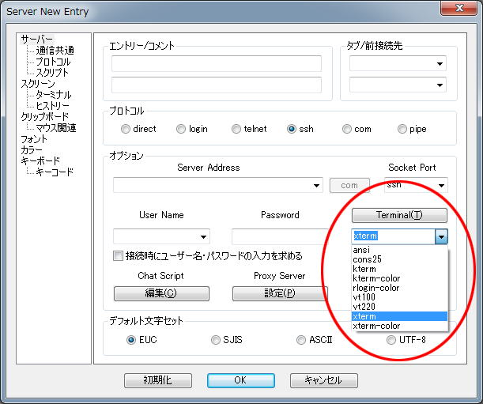
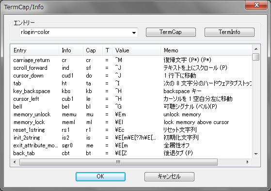

rlogin/telnet/sshでは、TERM環境変数をクライアントで設定してコンソールの動作を決める必要があります。このTERM環境変数は、サーバー側のtermcap/terminfoにエントリーが設定されている必要があり、歴史的に非常に難解で多数の物があります。
tmuxやGNU Screen、vimなどで画面の表示が崩れる、おかしな挙動などのほとんど原因は、このTERM環境変数に設定されたtermcap/terminfoのエントリーが実際の端末の動作と合わない設定がされている事が多いものです。さらにキーコードの設定などもtermcap/terminfo内でされておりキー動作がおかしいなどもこのTERM環境変数で起こります。
RLoginでは、出来るだけxtermの挙動と互換性を持つようにしていますがxterm-colorなどではEUCとの相性が悪い物がありますので注意が必要です（文字バンク1をVT100-GRAPHICに変更してしまう）
オリジナルの設定も出来るように「Terminal」「TERMCAP」（環境変数の設定）で用意していますが、残念ながらかなり難解でサーバー側で多く設定などもありお勧めできるような物ではありません。しかし完全な動作を望むなら設定するほうがよいかもしれません。
termcapの場合は・・・
sshd_configにAcceptEnv TERMCAPしてTERMCAP環境変数を送る
root権限ですべてのユーザーで使用するなら・・・
/etc/termcapを直接編集してcap_mkdbする
tertminfoの場合は・・・
tic rogin.ti
などですね・・・
デフォルトのRLoginオリジナルのtermcap/terminfoです・・・
rlogin-color:\
:am:ut:xn:km:mi:ms:co#80:it#8:li#24:Co#256:pa#65536:bt=\E[Z:\
:bl=^G:cr=^M:cs=\E[%i%d;%dr:ct=\E[3g:cl=\E[H\E[2J:cb=\E[1K:\
:ce=\E[K:cd=\E[J:ch=\E[%i%dG:cm=\E[%i%d;%dH:do=^J:ho=\E[H:\
:vi=\E[?25l:le=^H:ve=\E[?25h:nd=\E[C:up=\E[A:vs=\E[?25h:\
:dc=\E[P:dl=\E[M:as=\E(0:SA=\E[?7h:mb=\E[5m:md=\E[1m:\
:ti=\E[?1049h:mh=\E[2m:im=\E[4h:ZH=\E[3m:mr=\E[7m:mk=\E[8m:\
:so=\E[7m:us=\E[4m:ec=\E[%dX:ae=\E(B:RA=\E[?7l:me=\E[m:\
:te=\E[?1049l:ei=\E[4l:ZR=\E[23m:se=\E[27m:ue=\E[24m:\
:is=\E[!p\E[?3;4l\E[4l\E>\E]104^G:al=\E[L:kb=^H:kD=\E[3~:\
:kd=\EOB:@7=\EOF:k1=\EOP:k;=\E[21~:F1=\E[23~:F2=\E[24~:\
:k2=\EOQ:k3=\EOR:k4=\EOS:k5=\E[15~:k6=\E[17~:k7=\E[18~:\
:k8=\E[19~:k9=\E[20~:kh=\EOH:kI=\E[2~:kl=\EOD:kH=\EOF:\
:kN=\E[6~:kP=\E[5~:kr=\EOC:*6=\EOF:ku=\EOA:ke=\E[?1l\E>:\
:ks=\E[?1h\E=:op=\E[39;49m:DC=\E[%dP:DL=\E[%dM:DO=\E[%dB:\
:IC=\E[%d@:SF=\E[%dS:AL=\E[%dL:LE=\E[%dD:RI=\E[%dC:SR=\E[%dT:\
:UP=\E[%dA:r1=\Ec:rc=\E8:cv=\E[%i%dd:sc=\E7:sf=^J:sr=\EM:\
:st=\EH:ta=^I:Km=\E[M:AB=\E[48;5;%dm:AF=\E[38;5;%dm:\
:rs=\E[!p\E[?3;4l\E[4l\E>\E]104^G:bs:kn#12:pt:ml=\El:mu=\Em:\
:AX:XT:
rlogin-color,
am, bce, xenl, km, mir, msgr, cols#80, it#8, lines#24,
colors#256, pairs#65536, cbt=\E[Z, bel=^G, cr=^M,
csr=\E[%i%p1%d;%p2%dr, tbc=\E[3g, clear=\E[H\E[2J,
el1=\E[1K, el=\E[K, ed=\E[J, hpa=\E[%i%p1%dG,
cup=\E[%i%p1%d;%p2%dH, cud1=^J, home=\E[H, civis=\E[?25l,
cub1=^H, cnorm=\E[?25h, cuf1=\E[C, cuu1=\E[A,
cvvis=\E[?25h, dch1=\E[P, dl1=\E[M, smacs=\E(0,
smam=\E[?7h, blink=\E[5m, bold=\E[1m, smcup=\E[?1049h,
dim=\E[2m, smir=\E[4h, sitm=\E[3m, rev=\E[7m, invis=\E[8m,
smso=\E[7m, smul=\E[4m, ech=\E[%p1%dX, rmacs=\E(B,
rmam=\E[?7l, sgr0=\E[m, rmcup=\E[?1049l, rmir=\E[4l,
ritm=\E[23m, rmso=\E[27m, rmul=\E[24m,
is2=\E[!p\E[?3;4l\E[4l\E>\E]104^G, il1=\E[L, kbs=^H,
kdch1=\E[3~, kcud1=\EOB, kend=\EOF, kf1=\EOP, kf10=\E[21~,
kf11=\E[23~, kf12=\E[24~, kf2=\EOQ, kf3=\EOR, kf4=\EOS,
kf5=\E[15~, kf6=\E[17~, kf7=\E[18~, kf8=\E[19~, kf9=\E[20~,
khome=\EOH, kich1=\E[2~, kcub1=\EOD, kll=\EOF, knp=\E[6~,
kpp=\E[5~, kcuf1=\EOC, kslt=\EOF, kcuu1=\EOA,
rmkx=\E[?1l\E>, smkx=\E[?1h\E=, op=\E[39;49m,
dch=\E[%p1%dP, dl=\E[%p1%dM, cud=\E[%p1%dB, ich=\E[%p1%d@,
indn=\E[%p1%dS, il=\E[%p1%dL, cub=\E[%p1%dD, cuf=\E[%p1%dC,
rin=\E[%p1%dT, cuu=\E[%p1%dA, rs1=\Ec, rc=\E8,
vpa=\E[%i%p1%dd, sc=\E7, ind=^J, ri=\EM, hts=\EH, ht=^I,
kmous=\E[M, setab=\E[48;5;%p1%dm, setaf=\E[38;5;%p1%dm,
OTrs=\E[!p\E[?3;4l\E[4l\E>\E]104^G, OTbs, OTkn#12, OTpt,
meml=\El, memu=\Em,
|

 |